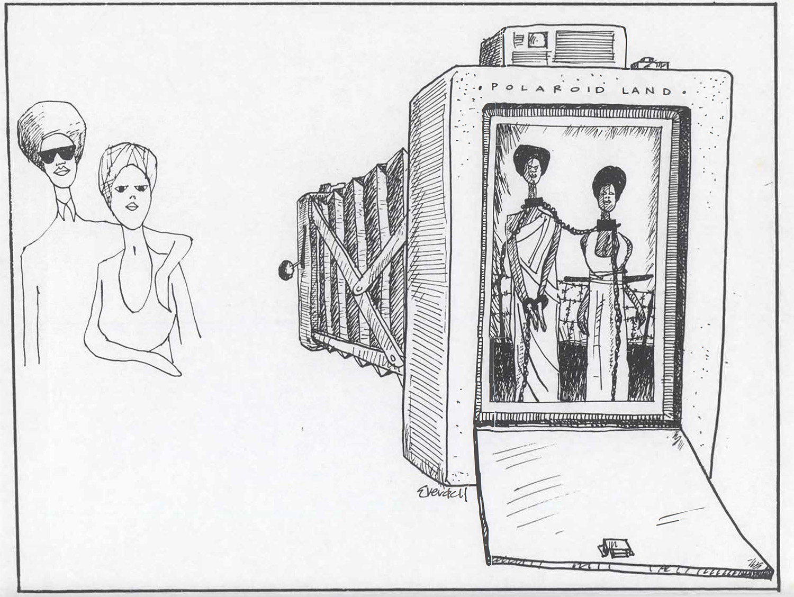

Chapter Four
Oversight
How the visual enacts control (and enables refusal)

Two bullet security cameras on a wall in Toronto, Canada, 2017. Scott Webb.
“What is Polaroid doing in South Africa?” This question is not one that Polaroid chemist Caroline Hunter expected to be asking herself on her way to meet her colleague, Ken Williams, for lunch one October afternoon in 1970. While passing through the photography department, however, her eye had caught on a bulletin board where a mocked-up image hung. In it, they recognized the face of someone they knew: another Black Polaroid worker. However, his name was now South African, and his face was on an ID badge for the South African Department of the Mines. Hunter thought it looked like a mock-up for a Polaroid ID product, but what would Polaroid be doing in South Africa?1
This question led Hunter and Williams to investigate and ultimately find that Polaroid was more involved in South Africa than was widely known. Poloroid, along with several other companies, sold film and cameras to private companies, and those materials sometimes ended up in the “passbooks” that controlled Black people’s movement under apartheid. Discovering Polaroid’s involvement in South Africa led Hunter and Williams to risk their jobs (and lose them) in founding the Polaroid Revolutionary Workers Movement (PRWM).2 They met with executives, took out ads in newspapers, and circulated leaflets around the Polaroid office building, including the below sketch, with the message: “Polaroid imprisons black people in sixty seconds. They sold this I.D. system to South Africa.”3
Sketch from the Polaroid Revolutionary Workers Movement pamphlet, 1971. PRWR, Reg September and Ken Williams.
Although a specific camera is not named in this image, there was one device that the PRWM focused on in their activism: the ID-2, a full color instant film camera that could produce a printed image in about 60 seconds. The pictures produced by the ID-2 were actually a composite of two images—one of the subject and one a copy of the surrounding ID, which were composited together, making a nearly unforgeable seal between them. And the ID-2 had one other special feature—a “boost” button for increasing the camera’s flash by 42%, which increased the range of dark tones that could be captured in the final photograph. That special flash, alongside the camera’s portability, strong metal design, and quick photo development, led the PRWM as well as subsequent scholars and artists to speculate that the ID-2 was not only intended for domestic (US) use but was also “Polaroid's answer to South Africa's very specific need.” 4As another pamphlet from the PRWM asserts:
Identification is a basic tool in population control. Every totalitarian government has devised some means of subjugating its poeple [sic] through identity cards. In the past, these systems has been weak: they have been difficult to administer; cards could be tampered with and altered. Now Polaroid has put an end to all that. It has used its sophisticated technological know-how to create an almost foul-proof system of citizen identification. Known as the ID 2, Polaroid’s system takes your picture, develops it in two minutes, seals it in unbreakable plastic, and registers your name and other information in computers. Zap, you’re identified! Once you have the ID card, there is no way of destroying the record. Remember, the ID 2 takes two pictures. You get one. Who gets the other one?5
We open this chapter with the Polaroid Workers Revolutionary Movement and the ID-2 because it demonstrates how oversight is a ubiquitous, powerful, and persistent rhetorical function of the visual that is distinct from the more familiar functions outlined in Part I. Visual rhetoricians have sometimes recognized this oversight function, but typically only implicitly. To the extent that visual rhetoric scholarship has been influenced by Nicolas Mirzoeff’s The Right to Look,6 we have taken up the presumption that hegemonic control is partly a matter of vision and have therefore tracked power through technologies of sight. And yet, even as rhetoricians cite Mirzoeff, for the most part we have continued to use the word “visuality” as a synonym for “pertaining to the visual,” rather than incorporating the word’s more structural and racialized meaning developed in The Right to Look. Etymologically, Mirzoeff explains, “visuality” begins as the capacity of a commander to envision the entirety of a battlefield and the role of the literal “Overseer” of slaves on a plantation. It is a term not merely for invoking what is seen but for recognizing the hegemonic work done by sight.